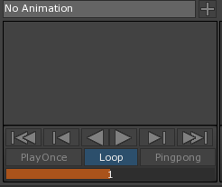

Animator
The Animator allows you to change a value of the properties of components over time.
Why it exists
Animator allows your to custom build complex animations to suit a certain type of situation through the Zero Editor using a graphical representation that is sometimes too tedious or impossible to do in code. Using the Animator you can line up multiple Keyframes (explained below) of the properties on a timeline to achieve complex animation.
These are some examples of the type of animation the Animator can do:
- Moving Platforms
- Day/Night cycles
- Flickering lights
- Opening doors
- Cinematic Events
- UI animations
- and more...
Opening the Animator
This is accomplished through the use of a special tool known as the Animator which can be accessed by pressing the button at the top of the Zero Editor window.
Alternatively, the Animator can also be opened through the Zero Search Window.
You should see a window opened up at the button of the Zero Editor that looks like the following:
AnimationGraph Component
Before we can start animating your object’s properties using the Animator, you first need to add the AnimationGraph component to your object. This tells Zero that this object’s properties are now able to be animated as well as how fast it should be played. You add the AnimationGraph component just like any other component or by clicking on the highlighted text at the bottom of the screen:
Adding an Animation
The last step, before we can start, is to create an Animation with the RichAnimation template. This can be done, through Zero’s Add a Resource window:
This can also be done by clicking on the highlighted text at the bottom of the screen:
You should see the object now have a new SimpleAnimation Component.
SimpleAnimation Component
This component indicates what animation to associate with the object. From this component, you can choose which animation to play and also the play mode of the animation which is discussed below.
Now you’re ready to start animating.
Keyframes
To begin animating, you must create keyframes. Keyframes tell the animation that, at a given point in time, you want a property to be at a given value. Between each keyframe, the Animator will create a curve that will interpolate the chosen property values between each keyframe.
To choose the property to keyframe, click on the [7. Key.png] icon next to the property that you want to animate. This will create a keyframe of that property, with its current value, at the time indicated by the Play Head (the vertical blue bar in the animation graph).
The next step is to move the Play Head to a future time, change the value of the property to a different one and then create a new frame. You can also scrub through the timeline by dragging the playhead around. Subsequent frames can be created by clicking on the icons or by pressing K.
Notice how the Animator creates a curve interpolating between the two values. By repeating this, you can create multiple keyframe with the chosen time and value. Next, we’ll use the animation controls on the lower left corner to play and see the animation in action.

Animation List
You may have noticed that on the left-hand side of the Animator window, you see the name of the animation that you have created. This location shows the current animation you are editing together with the values you are manipulating and also it allows your to switch to different animations if you want to editor the other animation easily.
Animation Controls
By default, the animation plays at 30 frames per second, meaning that if your second keyframe was at frame 30, your animation will take exactly one second to complete.
You can also use the animation controls to play, play in reverse, step frames and move to the beginning or end of your animation which allows you to preview and fine tune the value changes over time.
At the bottom of the animation controls you’ll also be able to set your animation preview playmode:
- Play Once: Plays your animation and stops when the animation is over
- Loop: Plays your animation again after it’s over and repeats it indefinitely
- Pingpong: Plays your animation forward and then backward after it’s over and repeats it indefinitely
Take note that these changes do not take effect in-game. You can change the in-game playmode through the object’s SimpleAnimation component.
- Preview Time Scale: Determines how fast the animation is played when previewed. This does not affect the in-game speed. You can adjust the in-game timescale through the object’s AnimationGraph Component.
Animator Settings
Here is a list of the other settings and functionalities of the Animator:
From left to right:
- X: A field that displays the position of a key with respect to time (Horizontal Axis)
- Y: A field that displays the position of a key with respect to its value (Vertical Axis)
- AutoKey: Allows for dynamically creating keys whenever the property of the object is altered.
- AutoFocus: Frames the selected curve or collection of keys on the animator screen when the curve changes (also accessible by pressing F)
- Snapping X: When toggled, the playhead will snap to the nearest X value.
- Onion Skinning: When toggled displays ghost versions of the object with property values equivalent to frames close to the Play Head
- Frames / Timecodes: Swaps between frames and timecode display at the bottom of the Playhead
- Linear Tangents: ???
- Split Tangents: Toggle between splitting and joining the tangent between the left and right side of the point
- Weighted Tangents: Toggle between weighted and non-weighted tangents
Examples
Moving Platform It is very easy to create a moving platform by using the Animator.
Firstly, add an AnimationGraph and SimpleAnimation component to the platform. Next create a new animation to edit.
Keyframe the initial position of the platform. Next move the playhead to sometime in the future (this will determine how fast your platform move ) and have a keyframe of the platform at the end location.
Finally, we can have the platform move back and forth by selecting the Pingpong playmode on the platform’s SimpleAnimation component.
Day-night Cycle It is also very easy to create a day-night cycle by using the animator.
Here we have a Sun object that is centered at the center of the level. Inside the Sun object, we have a directional light object that lights the level from a distance away. We want to be able to simulate a day-night cycle by rotating the light around the level with the light always facing the center of the level.
We can do this by adding the AnimationGraph and SimpleAnimation component to our Sun object. We then have to create a new animation to edit.
Next, we keyframe the starting position of the Sun object rotation property. Move the playhead forward and create another keyframe. Click on the appropriate rotation property in the Animator and change the Y value of the Animator settings to the value “360”.
Finally, set the playmode to loop and then you have a day-night cycle.